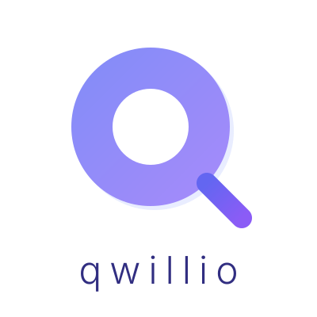
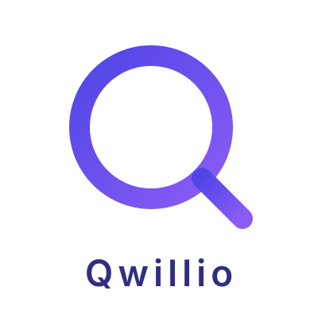
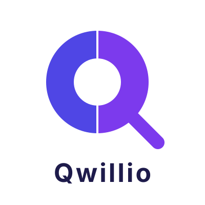
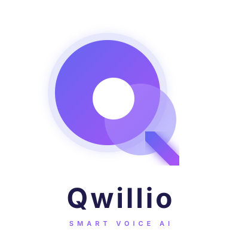

10 variantes — Styles Minimal Q et Abstract Q
Q geometrique avec remplissage degrade, trou central net, queue diagonale epaisse. Wordmark en gras.

Q pastel avec ombre douce derriere, degrade subtil. Wordmark en police fine/light avec espacement large.

Q en anneau (stroke uniquement, pas de remplissage). Style lineaire ultra-minimal.

Q coupe en deux : moitie gauche indigo, moitie droite violet. Effet bicolore moderne.
Q degrade avec une copie decalee en arriere-plan (ombre lavande). Effet de profondeur elegant.

Cercles superposes avec effet lumineux (glow/blur). Queue du Q avec le meme glow.
3 cercles decales (grand, moyen, petit) creant un effet de mouvement et cascade.
Degrade radial creant un effet 3D/sphere avec reflet lumineux en haut a gauche.
Q en anneau epais avec cercle plein semi-transparent decale derriere. Mix outline + abstract.
Q abstrait avec points orbitaux et lignes de connexion. Evoque un reseau IA et la connectivite.